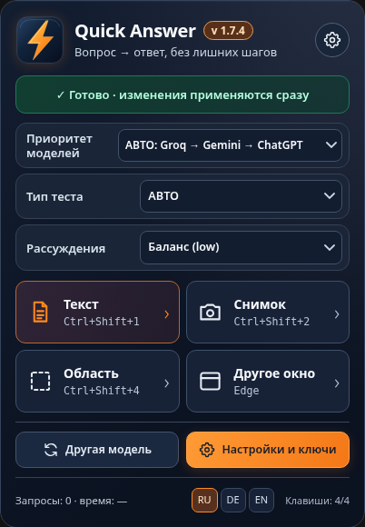
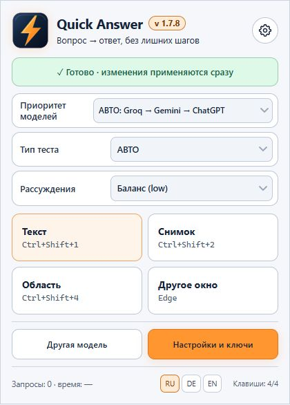

Расширение Edge 1.7.8
Загружается как распакованное расширение и используется автором проекта. С каждым провайдером и школьным сайтом не проверялось.
Quick Answer — учебный помощник для самопроверки и подготовки. Соблюдайте правила своего учебного заведения: использовать его на экзаменах, контрольных работах и оценочных тестах запрещено.
Расширение Edge читает текст или снимок страницы, спрашивает ИИ-провайдера по вашему собственному ключу и показывает короткий ответ с обоснованием, которое можно проверить. Ничего не нажимается автоматически.
Расширение Edge · 1.7.8 Microsoft Edge · WindowsПеред началомMicrosoft Edge и собственные ключи Groq или Gemini. Вопросы и снимки отправляются выбранному провайдеру.


Установка, функции, данные, проверка.
Как в руководстве: скачать ZIP, распаковать, подключить в Edge.
Вопросы и снимки отправляются выбранному ИИ-провайдеру. Нужны собственные ключи; расширение работает не локально и не офлайн и не собирает статистику.
Две отдельные сборки с разной степенью проверки.
Загружается как распакованное расширение и используется автором проекта. С каждым провайдером и школьным сайтом не проверялось.
Распакуйте desktop-архив и запустите START_QuickAnswer.cmd. Требуются Windows 10/11, Windows PowerShell 5.1, WinForms и .NET Framework. Скомпилированного EXE нет. Ctrl+Alt+1: экран; 2: активное окно; 4: область. Ключи защищены DPAPI CurrentUser. Изображения отправляются выбранному провайдеру. Запуск, провайдеры, DPI и хоткеи не проверены. Вложенный Bridge принимает только браузерные расширения; desktop с ним пока несовместим.
Desktop 0.1: только исходники, без EXE; запуск в Windows не проверен.
Руководство за пять шагов проведёт от установки до ключей и диагностики.